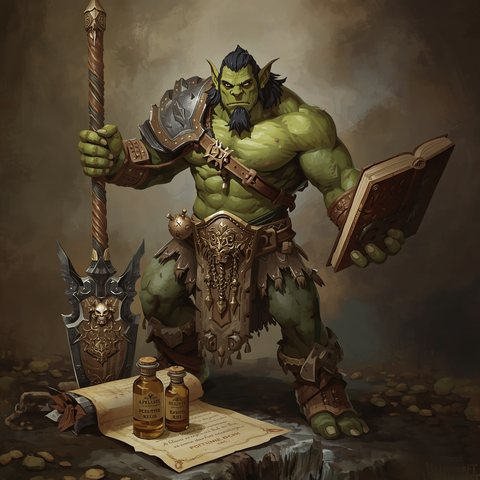
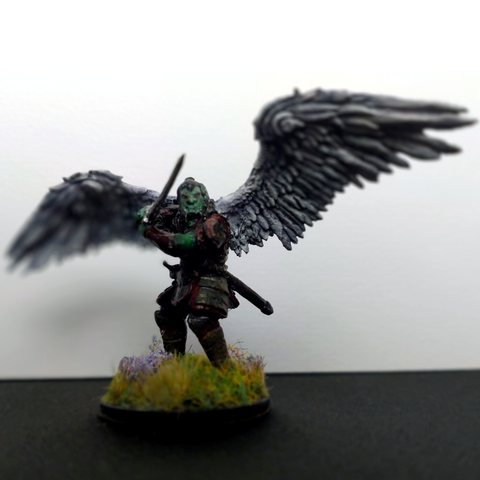

Azog le Valeureux
📜 Ouvrir la fiche de personnage (Google Sheets)


- Type : PJ
- Race / classe : semi-orc, guerrier
- Alignement : loyal bon
- Statut : actif
- Lieu actuel : château de Garches
- Titres : comte du duché de Bromaël, copropriétaire des ruines de Garches et des Landes Grises
Caractéristiques (fiche)
| Dextérité | Vitesse | Charisme | |
|---|---|---|---|
| Total | 16 | 10 | 17 |
| Seuil épique (d20) | 4 | 10 | 3 |
| Seuil légendaire | 11 | 17 | 10 |
| Seuil mythique | 18 | 24 | 17 |
Bonus spéciaux : auréole (-3 / -3 / +6), ailes (-1 / +1). Les ailes viennent de l'auréole de Cloaphilès : elle les donne à celui qui la porte.
Armes
- Épée (d12), dague (d4), bolas (portée 20 m, d4)
Sorts
- Déchiffrer n'importe quelle langue avec le vocabulaire d'un enfant de 7 ans (coût 1)
- Invoquer Epharel, démon majeur (coût 8, 10 min)
- Voler sur 20 m (coût 2). Sort à part, qu'Azog a grâce à ses ailes.
Objets importants
- Émeraude qui lie le futur au présent (une des quatre gemmes de Wayland). Il la garde pour Ali Pashino et la lui prête pour son sort de divination.
- Auréole de l'archonte Cloaphilès. Volée avec l'aide du démon Epharel. Donne des ailes à celui qui la porte.
- Livre de sorts écrit en Haut Sanprit, et une page déchirée sur la phonétique du Haut Sanprit
- Candélabre, potion de force
- Lettre de recommandation de Spada auprès du sénateur Rapazzoni
- 564 sous d'or ; placement de 800 SO chez le nain Skirfir Rognellard (0,5 % par mois)
Background
- Origine : monts d'Ûkkhraal, entre l'Ouromagne et la République de Ciudalia.
- Traumatisé par la violence des pillages entre clans.
- A sauvé la fille d'un mage, qui lui a appris à lire.
- Objectif : construire l'armée légendaire des gens loyaux.
Ce qu'on sait (résumé des sessions)
- A délivré Spada Rapazzoni avec Aldaron.
- A volé l'auréole de Cloaphilès avec l'aide d'Epharel. L'armée des morts l'a reconnu comme maître.
- La deuxième invocation d'Epharel a raté (erreur de prononciation) et a créé une distorsion temporelle.
- A égorgé l'Innommable sans procès.
- A obtenu, en insistant lourdement, la plus grande chambre du château de Garches, à la place de Gareth et Mélisande.
- 1004 CR : « libère les Landes Grises de leur malédiction ».
Fils ouverts
- Quel prix pour Epharel ? Voir Le prix du démon Epharel.